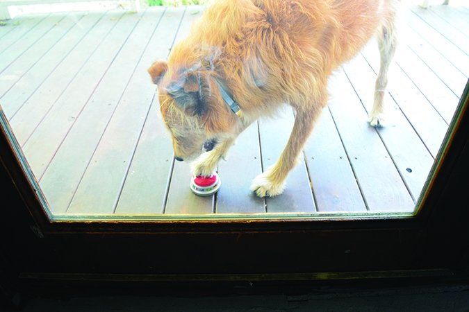

Stop Your Dog’s Demanding Behavior
Some of your dog's demand behaviors" might be cute
DEMAND BEHAVIORS IN DOGS OVERVIEW
– Reframe your thinking about “demand behaviors” so that you can value your dog’s attempts to communicate with you.
– Teach your dog a more acceptable “ask” behavior to avoid frustration for both of you.
– Teach your dog a “That’ll do” cue so you can communicate clearly to her that it’s time to stop asking – for now.
Your dog wants another treat. She barks at you, her shrill voice grating on your ears like fingernails on a blackboard. You’re typing at your computer and your dog wants you to toss her beloved tennis ball. She nudges your arm persistently with the treasured yellow orb clenched firmly in her jaws, and paws at you when you ignore her nudging. Your dog needs to go out, and you hear her scratching at the back door, adding new gouges to your recently repainted door frame.
These are demand behaviors, often regarded in the dog world as annoying and inappropriate. But what if we looked at them from a different perspective?
A dog’s demand behavior is her effort to communicate her wants and needs to you. Her demand behaviors increase in intensity because she is frustrated when she doesn’t get what she wants. Imagine how frustrating it would be to keep asking for something and have someone deliberately ignore your requests. No wonder she gets frustrated!
When you think about it, it is a true marvel of our unique relationship with the canine species that they are able to communicate so effectively with us, and we with them. Rather than spurning this gift, perhaps we should value and appreciate our dogs’ attempts to make the world work for them – a world in which they often have very little choice or control.
“The power to control one’s own outcomes is essential to behavioral health.” This compelling quote is from Dr. Susan Friedman, faculty member in the Department of Psychology at Utah State University. (See “Training a Dog to Make Choices” November 2016.) Susan is an outspoken advocate of changing behavior through facilitation rather than force. With this quote in mind, I propose we reframe our perception of demand behaviors in order to give our dogs more power to control their own outcomes. Instead of calling these behaviors annoying, we could look at them as invaluable communications with potential to enhance the behavioral health of our canine family members, and figure out how to facilitate those communications.
Does that mean we have to always give our dogs everything they ask for? Not at all. It means that we need to give our dogs an acceptable forum for communicating their wants and needs. And we must also be clear about when we are not willing or able to give them what they want, in order to teach them to stop asking when we have signaled “Not right now!”
Let’s look at how this communication could work for demand behaviors like scratching at the door, pawing, nudging, and barking. Then we’ll discuss how to install the “off” switch.
Scratching at the Door
Many dogs learn this behavior as a way to communicate to their humans that they need or want to go outside. It’s important to make a distinction between the two.
Years ago, I had dinner with a friend whose blue heeler, Ranger, scratched at the door to go out – or come back in – literally every three minutes throughout the entire dinner. There is no way this dog had to eliminate that often, but to my friend’s everlasting credit, she calmly got up and let him out – or in – every time he asked. Annoying indeed, but my friend never raised her voice or refused her dog’s request. After dinner, he settled calmly on the living room rug as we chatted.
Some years ago, the dog training world came up with the idea of teaching dogs to ring a bell when they wanted to go out, thus saving thousands of door frames from potty-request damage. Humans who teach their dogs this behavior can now proudly boast of their dogs’ brilliance and bell-ringing prowess. That alone, however, would not have forestalled Ranger’s frequent door requests. Some humans know their dog’s elimination schedules, and just don’t respond to the bell when they know the dog is “playing” them to go out. That risks frustration on the dog’s part, as well as the possibility of human error, with a serious consequence of not letting the dog out when she really does have to go.
What if, instead, you taught your dog two different cues – one that means “I have to go to the bathroom,” and one that means “I want to go out and play”? They are, after all, two distinctly different behaviors!
You can stick with the bell-ringing behavior as your dog’s potty-break cue, and use a different mechanism altogether, such as a buzzer or talking button (such as the Staples “Easy” button), for the play-break cue. Or simply acquire two bells that look and sound very different, one for potty and one for play. To make it easiest for your dog, you could install the potty bells at one door, and your second sound device – let’s say a buzzer – at a different door.
First, teach your dog how to activate each sound device by shaping her to touch them with a nose or paw. (For more information about shaping, see “Shaping Your Dog’s Behavior” January 2017, and “Methods to Produce Better Behavior” August 2014.) Then add your verbal cue – a different verbal cue for each sound device.
Say, “Want to go potty?” (or whatever phrase you plan to use), and encourage her to ring the bells. A jingle gets a verbal marker and an escorted trip outside to her favorite bathroom spot. (I use “Yes!” as my verbal marker – but you could say “Click!” if the word “yes” creeps into your vocabulary too often, which could weaken its power as a marker.) When your dog eliminates, click, treat, and praise, and take her back inside.
When she is doing this easily, hang the bells at her potty door, and gradually ask the question from farther and farther away, until she gets the idea of going to the bells herself from anywhere in the house to ask to go out.
Meanwhile, add your cue for the play buzzer, by saying “Want to go out and play?” and encouraging her to activate the buzzer. When she does, give your verbal marker and take her out for a round of her favorite game – fetch, chase, dig, or whatever she loves. Sometimes you can just let her out to play on her own, assuming you have a safely enclosed yard.
Again, when she is doing the behavior easily, attach the buzzer near the play door and gradually increase distance until she will go to the buzzer on her own to ask to go out.
Now you’re ready to add the “off” switch. (See “Install an ‘Off Switch’ on Playtime“.) If she buzzes to go out to play, you can let her out to play or, if it’s not a good time or you think she’s been out enough, use your “That’ll do!” cue to let her know that there’s no point in asking again. You can also do this with the potty bells, but only if you are absolutely sure she doesn’t really have to go out. Err on the side of generosity with this one, but if you routinely take her out, wait for her to go, click, treat, and then bring her back in, she’s less likely to give false signals with the potty bells.
Barking, Nudging, and Pawing
Dogs bark for a lot of reasons, but when they are barking at you with “that look” in their eyes, it’s usually because they want something from you. This behavior can be particularly unwelcome because the repetitive barking can be quite annoying – to your neighbors as well as to you. Persistent nudging and pawing tend to not disturb neighbors, but can still be bothersome when you are trying to focus on something else.
As with scratching at the door, your first line of defense for these behaviors is to teach your dog a more polite way to ask for what she wants, whether that’s a treat, a toy, or your attention.
If you want this to work, you will need to be sure to be observant so that you see and can reinforce the new “ask” behavior a good percentage of the time. If you don’t, she’ll likely revert to the old barking, nudging, and pawing – because those almost always work to at least get your attention. It’s hard to ignore a dog who is barking in your face, or putting long scratches down your arm! Here are some more acceptable behaviors that you can teach your dog to perform in order to “ask” for your attention:
- Go lie down on an “ask mat” provided specifically for this purpose.
- Nose-target to a plastic container lid attached to the wall. (One in each room, for easy communication.)
- Pick up a specific designated “ask toy” and drop it at your feet.
- Lie down and roll over or play possum (lying on back, tummy-side-up).
- Push a talking button provided for this purpose.
- Stand with front paws on a stool provided for this purpose.
You can see that the possibilities are endless – pick a favorite behavior or teach your dog something entirely new to be her “ask.” Then, anticipate and preempt her barking, nudging, or pawing by cueing her “ask” behavior when you see her heading for you with intent in her eyes. Be sure to reinforce the behavior when she does it! Also, watch for her to offer her “ask” behavior, and reinforce her when she does.
Meanwhile, studiously ignore any inappropriate barking, nudging, or pawing so these behaviors can extinguish. Be aware that when you extinguish a behavior by removing all reinforcement, the behavior may get worse before it gets better. This is called an extinction burst, as the dog tries very hard to obtain reinforcement for a behavior that’s worked well for her in the past.
Be careful! If you inadvertently reinforce your dog during an extinction burst, you will have taught your dog that the increased intensity level of behavior gets reinforced, and she will go there more quickly next time. (Note: If you have neighbors who will be inconvenienced by your dog’s barking during the extinction process, I strongly recommend you let them know you are working on it – and provide a dozen home-baked chocolate-chip cookies when you do.)
Finally, be sure to use your “That’ll do” cue when you end your reinforcement for the “ask” behavior; then, avoid reinforcing any “ask” behaviors that your dog engages in after your “That’ll do.”
He Can’t Always Get What He Wants
The bottom line here is that you get the behaviors you reinforce. If your dog does things you don’t like in her efforts to communicate her needs and wants, help her to learn how to communicate more effectively, thereby reducing frustration for both of you. It’s up to you to find a more appropriate way to help her control her own outcomes and be behaviorally healthy. You’ll both be happier for it!
Writer : Pat Miller